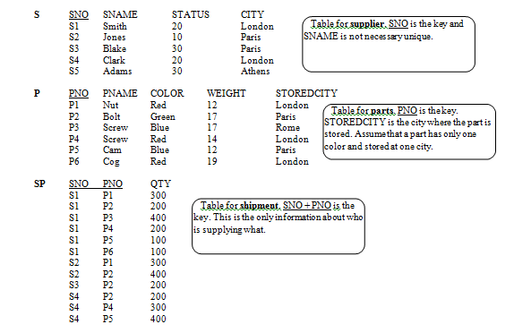

SQL Statements using the table of information provided. 
select sno, pname
from sp join p on sp.pno = p.pno
where exists (select *
from sp join sp as sp2 on sp.pno = sp2.pno
where sp.sno != sp2.sno
and p.pno = sp2.pno )
select pname from p
where not exists
(select *
from s join sp as sp2 on sp2.sno = s.sno
where s.status > 25
and not exists (
select * from sp
where p.pno = sp.pno
and s.sno = sp.sno ))
select sname from s
where city = 'london'
and sno in (
select sno
from sp
where pno != 'P2')
and sno in (
select sno
from sp
where pno = 'P2')
select distinct sname
from sp join s on sp.sno = s.sno
where exists
(select * from p
where color = 'red'
and sp.pno = p.pno
and not exists (
select *
from p
where color = 'green'))
Using a Database filled with 1-100 to retrieve certain results
create view Numbers1To100
as
select D1.D + D10.D * 10 + 1 as number
from BASE as D1 CROSS JOIN BASE as D10
<br>
select number
from Numbers1To100
where
number != 1 and
100 > number
and 1 < number
and number not in
(select F1.number
from Numbers1To100 as F1 join
Numbers1To100 as F2 on F2.number < F1.number
where
F1.number % F2.number = 0
and
F2.number != 1
and
F1.number != F2.number)
create view numbersPrime
as
select number
from Numbers1To100
where
number != 1 and
100 > number
and 1 < number
and number not in
(select F1.number
from Numbers1To100 as F1 join
Numbers1To100 as F2 on F2.number < F1.number
where
F1.number % F2.number = 0
and
F2.number != 1
and
F1.number != F2.number)
<br><br>
select table3.number from numbersPrime
as table3
where
table3.number % 2 = 0
and table3.number not in (
select (table1.number + table2.number)
from numbersPrime as table1 join numbersPrime
as table2 on
table1.number != table2.number
and (table1.number + table2.number) % 2 = 0
and (table1.number + table2.number) < 101)
select t1.number as P, t2.number as t,
Sqrt(t1.number + t2.number),
Sqrt(t1.number - t2.number)
from Numbers1To100 t1, Numbers1To100 t2
where t1.number > t2.number
and sqrt (t1.number + t2.number) not like '%.%'
and sqrt (t1.number - t2.number) not like '%.%'
order by t1.number
create view Numbers1To100
as
select D1.D + D10.D * 10 + 1 as number
from BASE as D1 CROSS JOIN BASE as D10
<br><br>
select A, A.Tens+A.Units As Sum
from
(select number, number%100, 1, 1) as Tens,
number%10 as units
from Numbers1To100
where number > 9) A
where A.tens + A.units = 8